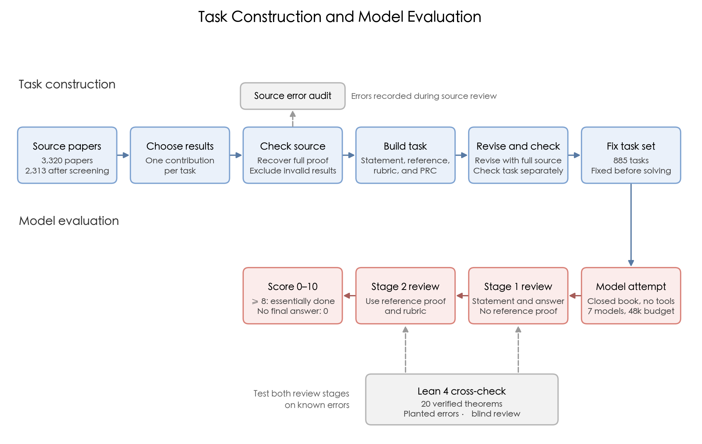
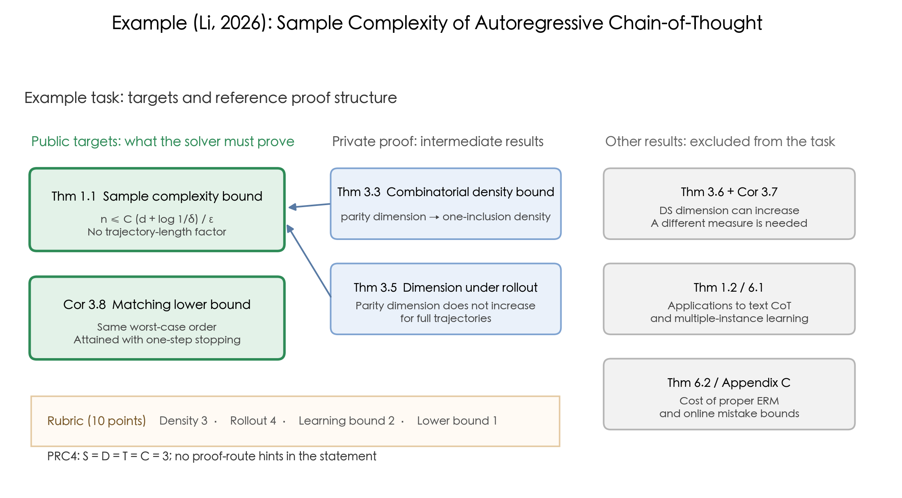
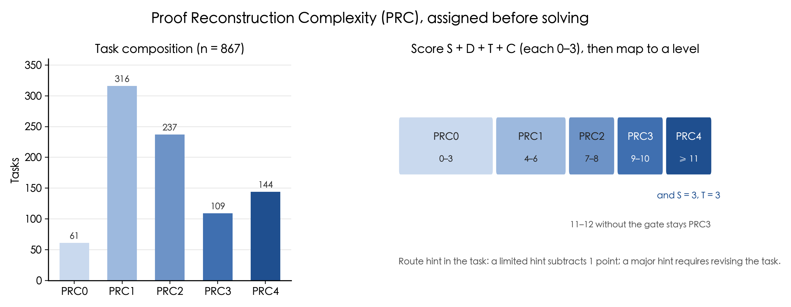
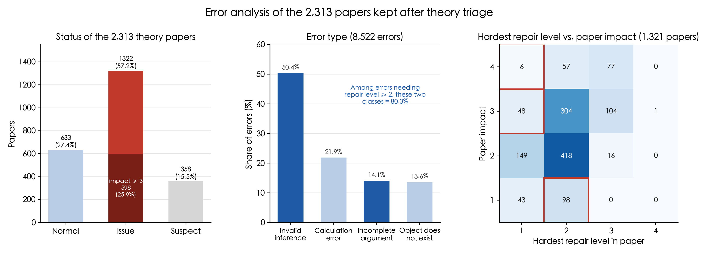
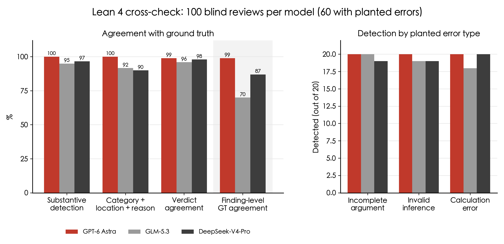
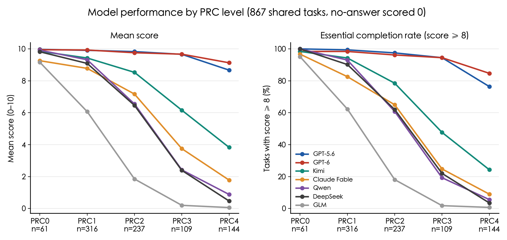
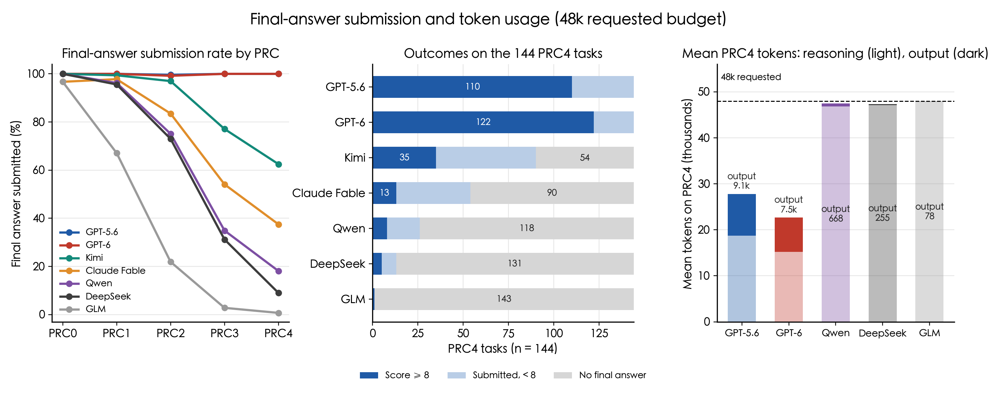
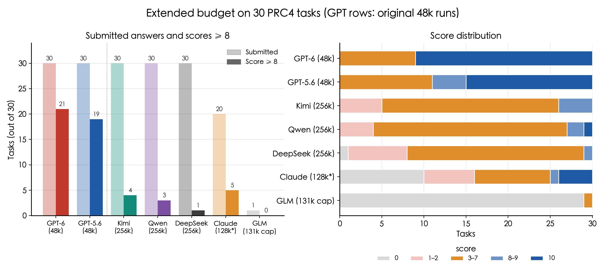

1. Background
1.1 Research Questions and Motivation
In October 2026, OpenAI released mathematical research results obtained by its internal models, some with formal proofs in Lean (OpenAI, 2026). These examples show that models can produce research-level results, but they report successful cases. Researchers also need to know how models perform on a fixed set of research-level problems. With the same computation budget and number of attempts, how many proofs can each model complete? When a proof is incomplete, what valid progress does it make, and which key steps remain missing?
Answering these questions requires three conditions. First, the problem set must be fixed before evaluation and cover a range of difficulty, so we can measure completion rates and identify where models fail. Second, all models must receive the same inputs, tools, and token budget for a direct comparison. Third, scoring must record the mathematical work completed in correct, partial, and incorrect proofs. MLtheorybench is built around these three conditions.
We use machine learning theory papers for three reasons. First, the field produces many papers: we collected 3,320 relevant papers from stat.ML, cs.LG, and math.OC between January and July 2026. Recent papers reduce the chance that the original proofs appeared in a model's training data. Second, each paper provides human-written proofs that can serve as references. Third, machine learning theory proofs depend on precise assumptions and derivations, such as the difference between bounds in expectation and with high probability, or between fixed parameters and parameters selected from data. These details help test whether a proof is complete.
Turning papers into tasks presents three problems. Definitions and assumptions are spread throughout a paper, so extracting a theorem alone can omit conditions. The paper itself may contain errors, so its proof needs checking before it can serve as a reference. Finally, evaluating many research-level proofs requires model-assisted scoring, whose reliability also needs to be tested.
Section 2 describes dataset construction: paper selection, the unit of a task, task checks, complexity ratings assigned before solving, and errors recorded in the source papers. Section 3 describes solving and scoring, tests the review models with a Lean 4 cross-check, and reports model results. Section 4 discusses the main findings and future work.
MLtheorybench turns proofs from recent machine learning theory papers into fixed tasks, gives seven models the same budget, and scores the core steps they complete. It also checks how reliably review models identify proof errors.

1.2 Example Task
At each step, a local rule selects an action from the current state. The action is appended to the history, and generation continues until it stops. The ordered actions form a trajectory. The learning goal is to predict the entire trajectory. A mismatch at any position counts as one prediction error.
Let ℋ be the class of local prediction rules, and let d = DSdim(ℋ) be its DS dimension, a measure of class complexity in multiclass learning. PAC learning controls two probabilities: the learned rule must predict the entire trajectory on a new example with error probability at most ε, and this guarantee must hold with probability at least 1 − δ over the randomly drawn training sample. Prove that the number of training examples needed satisfies
n(ε, δ) ≤ C · (d + log(1/δ)) / ε,
Here C is a constant. Also prove a worst-case lower bound of the same order. The upper bound has no trajectory-length factor. Each generation must eventually stop, but there need not be a uniform upper bound on trajectory length.
- Conditions: the local rules, trajectory generation process, stopping condition, and PAC learning objective.
- Target results: a sample complexity upper bound without a trajectory-length factor, and a matching worst-case lower bound.
- Proof structure: the statement gives only the upper and lower bounds to be proved. Two intermediate results needed for the upper bound remain in the private reference proof; the solver must find and prove them.
- Use later in this post: this task illustrates result selection, PRC assessment, and scoring.
2. Dataset Construction
This section explains how we turn papers into fixed tasks: select papers (2.1), decide what each task covers (2.2), check the statement and reference proof (2.3), assess complexity before solving (2.4), and report errors found in the source papers (2.5).
The final dataset contains 885 checked tasks, each covering a main theoretical contribution. Proof Reconstruction Complexity (PRC) is assessed before models attempt the tasks. Among the 2,313 papers that passed theoretical screening, 57.2% retained substantive error records, and 25.9% received paper-impact ratings of 3–4: an important central result or the main theoretical contribution lacked support.
2.1 Paper Collection and Screening
We collected 3,320 arXiv papers posted between January 1 and July 27, 2026, from the following categories:
| Source | Papers |
|---|---|
| Primary category: stat.ML | 1,583 |
| Primary category: cs.LG; cross-listed in stat.ML | 1,448 |
| Primary category: math.OC; ML relevance checked from the title and abstract | 289 |
| Total | 3,320 |
Not every paper in these categories has enough theoretical content for a task. In our samples, some papers were mainly experimental. Others contained theorems that added explanations of experimental observations without explaining why the method worked.
We therefore first classify each paper's contribution. Papers whose theory is limited to explaining experimental observations or routine derivations are excluded. Papers with new theoretical results as their main contribution proceed directly. For papers focused on methods or other contributions, we check whether they contain a sufficiently complete and representative proof for a task. Classification follows the actual theoretical content. Initially excluded papers receive an independent second check. This stage excluded 1,007 papers and retained 2,313 for further construction.
We take three steps to reduce reliance on existing answers. We select recent papers to reduce the chance that their proofs appeared in training data. During task construction, we remove titles, authors, arXiv IDs, original theorem numbers, and distinctive method names that could identify the source. During solving, models receive only the problem statement and common instructions. They cannot see the paper, reference proof, or rubric, and cannot search, retrieve information, or call other tools.
2.2 Task Unit: One Theoretical Contribution
The structure of machine learning theory papers makes one theorem per task an unreliable rule. Research-level theorems often depend on data models, algorithm settings, and regularity conditions that are stated in different parts of a paper and shared by several results. Extracting the theorem alone can omit necessary conditions. A theoretical contribution can also consist of several results: matching upper and lower bounds establish an optimal rate, while a general theorem and a key application explain how a result applies to a specific problem. Much of the proof difficulty may lie in lemmas supporting the main theorem.
We tried two approaches early on. The first assigned one theorem to each task. If theorem B uses theorem A, omitting A creates substantial overlap in proof work, while supplying A can reveal the most important intermediate step and turn B into a simple corollary. The second grouped every theorem in a paper into subquestions. Their order can reveal the proof route. Combining independent branches also adds work unrelated to the main proof difficulty and affects the complexity assessment.
We therefore make each task cover one main theoretical contribution: a set of results answering the same research question, with the main proof work preserved. The results need not depend on each other, but must address the same problem. Examples include matching upper and lower bounds, necessary and sufficient conditions, or a general result with a closely related application. The statement presents them as one proof task. Key intermediate results appear only in the private reference proof; the solver must discover and prove them.

The example task combines the sample complexity upper bound and matching lower bound because together they establish the optimal order. The two intermediate results supporting the upper bound stay in the reference proof and are not presented as subquestions. Other counterexamples and applications in the paper are excluded from this task; Figure 2 shows the selected results.
Selection has two steps. First, a model reads the full paper, organizes its theoretical material, and proposes at most four candidate groups of results. It scores each group from 0–3 on three criteria: coverage of the main theory, completeness of the results and supporting proofs, and whether the results belong to one line of argument. A zero on any criterion excludes the group; a total of at least 8/9 is required for further comparison. Qualifying groups are then compared on how well they preserve the original proof's main difficulties and methods. For the example, the upper bound with a matching lower bound scored 9, while another group concerning the new combinatorial dimension and its properties scored 8.
Second, the selected derivations are checked for correctness. Selecting results before checking their proofs keeps selection based on the theoretical contribution itself.
We also tried reconstructing the full paper's theorem dependency graph before choosing a task. Graphs produced from a full reading often missed dependencies, while checking every pair of results took substantial work. We now first list definitions, assumptions, and theoretical results, then recover the definitions, lemmas, and external results needed for each candidate. Conditions missed at this stage are restored during later revision against the full paper (Section 2.3). If an upstream result has a substantive error, results depending on it are also flagged.
Once results are selected, construction produces three core files: a public problem statement, a reference proof covering the target results, and a rubric assigning 10 points across 2–5 core steps. A separate provenance record maps the task conditions and reference proof steps to their source locations. Solvers see only the statement. All tasks allow standard mathematical theorems. We do not list permitted lemmas separately, since doing so could reveal the proof route. Scoring accepts correct routes beyond the reference proof.
2.3 Task Checks
Research proofs often omit steps. Most omissions can be filled using standard knowledge, but some hide missing assumptions or invalid reasoning. An incorrect reference proof can lead to incorrect scoring. A missing condition can make the task's conclusion false. Each task therefore undergoes two rounds of checks before models attempt it.
Checking the source proof. After candidate results are selected, a model recovers their full statements and proofs, including shared assumptions outside the theorem boxes. It checks the validity of the statements and completeness of the proofs separately, marking them as correct, locally repairable, or affected by a problem that changes the result. Candidate groups are checked in rank order, and the first group without substantive errors is selected. If all qualifying groups have substantive errors, the paper contributes no task. A paper with errors in an unselected branch can still supply a task from another valid group. Errors in other results are recorded separately (Section 2.5).
Separating revision from checking. Initial task construction gives the authoring model only the selected material, helping it focus on the chosen contribution and keep unrelated branches out of the statement. This has two consequences. If extraction misses a shared assumption stated elsewhere, the authoring model cannot recover it. Also, when generation and self-review occur in the same conversation, the model may reuse its earlier mathematical interpretation and miss construction errors. Later tests did find statements missing shared assumptions lost during extraction.
We therefore added a revision round and placed revision and checking in separate conversations. The revision model reads the paper and the latest statement, reference proof, and rubric. It checks the distributions of random variables, the order of parameter choices, the information available at each step, and which parameters the constants depend on, then corrects omissions and extraction errors.
The checking model receives only the latest statement and reference proof in a fresh conversation. It investigates specific concerns through derivations or counterexamples, distinguishing gaps in the reference proof from problems with the task's conclusion. Each revision is checked in another fresh conversation, with at most three checks and two feedback revisions. We retain the latest version that actually passed a check. Tasks with confirmed substantive source problems are recorded as paper issues. Tasks still unresolved at the feedback limit are excluded from formal scoring.
The final dataset contains 885 tasks. Of these, 867 have scores from all seven models; all model comparisons below use these 867 tasks. Manual spot checks of more than ten final tasks found no substantive errors in their statements or reference proofs.
2.4 Proof Reconstruction Complexity (PRC)
The theoretical depth of arXiv papers varies widely. Even after papers with insufficient theory are removed, many tasks have relatively simple proofs. They raise overall mean scores and can obscure differences on harder tasks, so we report results by task complexity. Groups must be assigned before solving and based only on the task. Defining difficulty from scores and then explaining scores with that difficulty would not independently test the classification.
We call this measure Proof Reconstruction Complexity (PRC). Given only the statement and access to standard mathematical knowledge, it assesses the ideas needed to find a complete proof, the intermediate results to establish, the difficult derivations to complete, and the mathematical tools to combine. The design draws on the distinction between complexity and difficulty in educational assessment (Webb; TIMSS 2023; PISA 2022). Complexity is assessed before an attempt from the reasoning and derivations required; difficulty is observed from actual performance.
The assessor first lists the key proof steps not supplied in the statement, usually 3–7, such as constructing a function, deriving an error estimate, or proving the reverse direction. Each of four dimensions is then scored from 0–3:
| Dimension | What it assesses | From lower to higher scores |
|---|---|---|
| S: Strategy discovery | Ideas beyond definitions and familiar methods needed to find a proof route | Apply definitions or familiar methods → independently discover and combine several key proof ideas |
| D: Subgoal structure | Intermediate results to prove and their dependencies | One intermediate result or a short chain → several interdependent groups of results supporting the conclusion |
| T: Technical execution | Difficulty of the derivations once the proof route is known | Direct calculation or routine derivation → several steps requiring specially designed arguments or constructions |
| C: Capability integration | Mathematical tools that the proof must combine | Mainly one tool → probability estimates, analysis, combinatorial arguments, and constructions jointly support key steps |
The four dimensions are scored separately because complexity has different sources. A proof organizing many simple intermediate results may have high D and low T. A proof with few intermediate results but difficult estimates may have low D and high T. Scores of 2 or 3 on any dimension need specific mathematical justification. A T score of 3 also requires at least two research-level difficult steps and an explanation of why routine derivations do not resolve them. Length, notation, and advanced terminology alone do not justify a high score.
The assessment also checks whether the statement reveals the proof route, which would reduce its actual complexity. A limited hint subtracts 1 point from the total. If the statement reveals several key intermediate goals or a decisive method, it must be revised before reassessment.
The four scores are summed, with any hint penalty deducted, and mapped to PRC0–PRC4 as shown below. PRC4 requires a total of at least 11 and scores of 3 in both strategy discovery and technical execution. Both finding the route and carrying out its derivations must meet the highest category. Among the 867 tasks, PRC0–PRC4 contain 61, 316, 237, 109, and 144 tasks, respectively.

The example receives S = D = T = C = 3, with no proof-route hints, placing it in PRC4. This follows from the source proof's structure. A solver must find a combinatorial dimension suitable for local rules, prove that it bounds the complexity needed for learning, show that the dimension does not increase when generating full trajectories, and derive the requested sample bound. Using DS dimension directly does not complete the proof: Theorem 3.6 in the source gives a counterexample with local DS dimension 2 and full-trajectory DS dimension at least 3. This assessment was completed before any model attempted the task.
PRC was fixed before solving and was not changed in response to results, so model performance can test the classification (Section 3.3). Across all seven models, scores generally decrease as PRC increases. Spearman correlations are −0.276 for GPT-5.6 and −0.221 for GPT-6, compared with −0.580 to −0.691 for the other models. The two GPT models' scores are concentrated near the top, giving weaker correlations.
2.5 Errors Recorded in Source Papers
We also recorded errors found during source checking and later revision (Section 2.3). Some can be repaired by adding assumptions or correcting derivations, but the repair may change where a result applies. We therefore separately record where the argument fails, the mathematical work needed to repair it, and how much of the original contribution remains supported.
The audit retains only issues with substantive effects on the mathematical argument. It excludes typos whose intended reading is clear, omissions that standard knowledge can directly fill, and small local errors that do not change the conditions, conclusion, or proof structure.
Assessment has three levels. For each error, we classify the failure and assess how much new mathematical work a repair requires (repair difficulty). For each result, we combine repairs to the result and its dependencies, then assess changes to conditions, scope, and strength (result impact). For the paper, we account for dependencies between results and assess how much of the main theoretical contribution survives (paper impact). An error in one theorem may affect only part of a paper; narrowing several results at once may leave the main contribution unsupported.
Two review models check each paper in independent conversations. A further reviewer with access to the source then checks all candidate issues. It removes typos and unsupported error claims, merges duplicate descriptions, separates independent errors, rechecks counterexamples, and assigns repair difficulty, result impact, and paper impact. On a small manually checked sample, this process agreed with human judgments more often than a single review.

Among the 2,313 papers passing theoretical screening, 1,322 (57.2%) retained substantive error records after review, 633 (27.4%) had no retained substantive errors in the current audit, and 358 (15.5%) still needed error evidence checked or impact assessment completed. Across the 1,322 papers with error records, the audit covered 4,426 results and retained 8,522 errors, with a median of 4 and mean of 6.45 errors per paper.
Errors are classified by where the argument fails:
- Invalid inference (50.4%): a derivation or theorem application is unsupported by the available assumptions. An example is applying a probability guarantee for a fixed parameter to a parameter selected using the same data.
- Calculation error (21.9%): an algebraic or numerical error that affects the result.
- Incomplete argument (14.1%): the established steps do not cover the full target, such as proving an expectation bound while claiming a high-probability guarantee.
- Required object does not exist (13.6%): the statement requires an object that need not exist under its conditions. For example, a function has an infimum that is never attained, yet the proof uses a minimizer.
Classifying the failure allows a specific proof issue to be recorded before a counterexample is found. Under a split between “proof error” and “statement error,” the same issue could change category when a counterexample is found, making classification depend on the reviewer's ability to construct one.
Repair difficulty has four levels. Level 1 permits direct correction. Level 2 needs a bounded local argument. Level 3 requires rebuilding a key argument or changing the conditions and conclusions used at a key step. Level 4 requires positive evidence that the main proof method must be reconstructed or the result withdrawn. Among the 8,513 errors with numerical ratings, mean repair difficulty is 1.47, and 57.1% allow direct correction.
Among errors requiring repair level 2 or higher, invalid inference and incomplete argument account for 80.3%. Common issues include misapplied theorems, missing arguments connecting intermediate results to the target, and transferring a conclusion from one distribution to a conditional distribution or another set of random variables without justification.
Repair effort and impact on the contribution need separate judgments. Suppose an algorithm takes O(n) work per round for n rounds, but the paper reports O(n) total work. Correcting this to O(n2) needs only a recalculation, so repair difficulty is level 1. But if linear runtime is the paper's main advantage, that advantage no longer holds after correction.
Result impact has four levels. Level 1 preserves the main guarantee and useful scope. Level 2 adds conditions or narrows part of the scope while retaining the main use. Level 3 supports a substantially weaker result, losing an important guarantee or regime. Level 4 leaves no supported, nonvacuous result with substantially the original use. We assess what survives using valid source arguments and supplements that follow from standard knowledge.
Paper impact measures how these changes affect the paper's main contribution. Level 1 preserves it. Level 2 changes the scope or secondary guarantees substantially while retaining the main contribution. At level 3, an important central result lacks support, but other valuable results remain. At level 4, the main theoretical claim or method guarantee stated in the abstract lacks support. The 1,322 papers with error records have 141, 583, 458, and 140 papers at levels 1–4, respectively.
Jointly counting repair difficulty and paper impact, 54 papers have hardest repair level 1 but paper impact 3–4. Another 98 have hardest repair level 2 and paper impact 1. In total, 598 papers have paper impact at least 3, or 25.9% of the 2,313 papers.
3. Evaluation Results
This section describes solving and scoring (3.1), tests review reliability on samples with known correctness (3.2), and reports results for seven models (3.3–3.6).
Model differences are largest on high-complexity tasks. On PRC4, essential completion (score ≥ 8) is 84.7% for GPT-6 and 76.4% for GPT-5.6; the highest rate among the other five models is 24.3%. With larger budgets on 30 selected tasks, DeepSeek, Kimi, and Qwen all submitted answers to every task, but only 1–4 answers per model reached 8 points.
3.1 Solving and Scoring
Solving setup
Each model receives the same problem statement and general instructions in an independent request, with one attempt and no internet access, retrieval, or tool calls. The main experiment allows 48,000 generation tokens, including reasoning tokens counted by the provider. The prompt states that reasoning and final output share this limit. If a model cannot complete the proof, it is asked to submit valid results already established and identify the remaining gaps. Attempts without a final answer score 0 and remain in every statistical denominator.
Two-stage review
A reviewer that sees the reference proof immediately may reject a correct alternative route or use the reference to fill steps missing from the answer. We therefore use two-stage review. The design draws on the open-problem review process in VALG (Zhang et al., 2026), with reference comparison and partial-credit scoring added.
Stage 1 sees only the statement and anonymous answer, without the reference proof or rubric. It checks assumptions, the applicability of external theorems, and key derivations. It judges validity only from the mathematics actually written and must not fill missing steps.
Stage 2 uses the answer, first-stage report, reference proof, and rubric. It verifies reported issues, maps completed work to the rubric's core steps, and assigns a score. Anonymous answers to the same task are scored separately within one review to reduce inconsistencies between review batches. GPT-6 is the main experiment's review model.
Ten-point scale and partial credit
Research proofs need more detail than a completion label. An answer may prove a key lemma without deriving the target result, or establish the lower bound while leaving the main upper bound unresolved. A binary label loses this information. We score the mathematical work actually completed:
| Score | Work completed |
|---|---|
| 0 | No correct relevant idea or useful method; no final answer also scores 0 |
| 1–2 | Relevant ideas beyond directly applying definitions or standard theorems, but no core proof step completed |
| 3–7 | Some substantive steps completed, with important gaps remaining |
| 8–9 | Proof essentially complete; remaining local issues need no new core idea to repair |
| 10 | Complete and correct under the task's conditions |
We define “essential completion” as a score of at least 8. Answers with a major logical gap receive at most 7, including proof plans and answers that treat an unproved core claim as a standard result. Within the 3–7 range, scores follow the weights assigned to core steps in the rubric.
Partial credit follows two rules. The first concerns upstream errors. If an answer first proves A and then derives B from A, we check the proof of A and the A-to-B derivation separately. If A is valid under the task's conditions but its proof has a gap, that part loses credit while a correct downstream derivation can still earn points. If A is false or inapplicable, dependent derivations receive no credit. The second rule concerns alternative routes: valid routes different from the reference are scored by the goals they actually establish. A complete correct alternative proof can earn full credit.
The example rubric assigns 10 points across four core steps: bounding combinatorial density using the combinatorial dimension (3), proving that the dimension does not increase when generating full trajectories (4), deriving the sample complexity upper bound (2), and proving a matching lower bound (1). Combinatorial density is a quantity used in the proof to bound learning error. The first two steps account for 7 points and contain the main work needed for an upper bound without a trajectory-length factor.
For judgments about task validity, result selection, complexity, and scoring, we first manually reviewed model decisions and revised the prompts accordingly. We checked the revised criteria on ten new papers for broad agreement with human judgments before fixing them for the full dataset.
3.2 Lean 4 Cross-Check
Manual calibration covers only a limited sample. The correctness of real papers and model answers is itself uncertain, making them unsuitable as a direct measure of review accuracy. We therefore built samples whose correctness and error locations are known. We start with formal proofs checked by the Lean kernel, confirming that the conclusions follow from the stated assumptions. We then plant errors in their natural-language versions, with known categories, locations, and reasons.
We selected 20 theorems related to machine learning theory from two Lean projects, AI4SLT (Zhang, Lee & Liu, 2026) and TestingLowerBounds. We translated their statements and proofs into natural language and checked definitions, assumptions, quantifiers, and key derivations. Each task has five versions: a correct proof, three proofs each containing one substantive error, and a control with only a local typo. The substantive errors use the categories from Section 2.5: incomplete argument, invalid inference, and calculation error. Each model receives 100 anonymous submissions: 60 with substantive errors and 40 correct proofs or typo controls. The model does not know the version of each submission. Correct proofs test false positives; typo controls test whether harmless typos are mistaken for substantive errors.
One task tests whether reviewers notice an incorrect order of parameter choices. It asks for approximation under Gaussian measure by smooth, compactly supported functions, controlling error in both function values and derivatives. The correct proof first fixes a sufficiently large truncation radius, then chooses a sufficiently small smoothing scale for that radius. The erroneous version varies both parameters together and applies convergence at a fixed radius to claim that the error still tends to zero, without showing that the result holds as the radius changes. We constructed a function satisfying the original assumptions whose error diverges along that parameter choice, confirming that the step is invalid.

We compared GPT-6 Astra, GLM-5.3, and DeepSeek-V4-Pro; the latter two had the lowest solving scores in the main experiment. They detected 60/60, 57/60, and 58/60 substantive errors, respectively, with no substantive false positives on the 20 correct proofs. They classified a typo as substantive in 1, 1, and 0 cases out of 20 typo controls. GPT-6, the main review model, detected all 60 planted errors. Of its 100 reports, 99 fully matched the recorded ground truth: error category, location, and reason where applicable, and the absence of substantive errors in correct proofs and typo controls.
Under this strict standard, GLM and DeepSeek matched only 70/100 and 87/100 reports. Differences mainly came from misclassification and extra reports of nonexistent issues. For example, GLM repeatedly read ordinary letters after line breaks as different LaTeX symbols and reported notation errors. All three review models rarely missed substantive errors in this sample, but differed in identifying their categories and locations.
3.3 Overall Results and PRC Groups
| Model | Mean score (0–10) | Essential completion (≥ 8) | No final answer | PRC4 essential completion |
|---|---|---|---|---|
| GPT-6 | 9.72 | 95.0% | 0.2% | 122 / 144 (84.7%) |
| GPT-5.6 | 9.65 | 94.5% | 0.1% | 110 / 144 (76.4%) |
| Kimi | 7.87 | 72.8% | 10.1% | 35 / 144 (24.3%) |
| Claude Fable | 6.58 | 59.3% | 21.7% | 13 / 144 (9.0%) |
| Qwen | 6.33 | 60.9% | 30.0% | 8 / 144 (5.6%) |
| DeepSeek | 6.15 | 60.2% | 32.8% | 5 / 144 (3.5%) |
| GLM | 3.40 | 34.7% | 62.3% | 1 / 144 (0.7%) |
867 fixed tasks, with the same denominator for all seven models; no final answer scores 0.
Both GPT models have overall means near the maximum and essential completion rates of about 95%. The other five models have overall means from 3.40 to 7.87. Grouping by PRC shows that differences are largest on high-complexity tasks. On PRC1, essential completion ranges from 82.6% to 99.4% except for GLM. On PRC4, GPT-6 and GPT-5.6 essentially complete 122 and 110 tasks, respectively, Kimi completes 35, and the remaining models complete 1–13.

GPT-6 has a slightly higher overall mean than GPT-5.6 (9.72 versus 9.65), mainly due to PRC4, where their means are 9.13 and 8.67.
3.4 Answer Completion and Token Usage
We separately report the fraction of attempts that submit a final answer within budget and the fraction scoring at least 8. On PRC4, final-answer submission rates for Kimi, Claude Fable, Qwen, DeepSeek, and GLM are 62.5%, 37.5%, 18.1%, 9.0%, and 0.7%, respectively. Across all 6,069 attempts, 1,363 have no final answer. Only 10 submitted answers score 0.
In provider-reported token breakdowns on PRC4, Qwen, DeepSeek, and GLM average about 46.8k, 47.1k, and 47.8k reasoning tokens, close to the requested 48k budget. Their non-reasoning outputs average only about 668, 255, and 78 tokens. These models use nearly the entire budget on reasoning and produce little final output. GPT-5.6 and GPT-6 average about 27.8k and 22.7k total tokens on PRC4, including about 18.7k and 15.2k reasoning tokens.
GPT-5.6 and GPT-6 use noticeably fewer tokens, possibly due to a loop Transformer architecture (unverified).

The prompt states the token limit and permits partial proofs. Attempts without a final answer score 0 in all statistics. The 48k limit is the requested budget; a few providers report slightly higher actual usage. Results use the original outputs.
3.5 Larger Output Budgets
How many more proofs can the non-GPT models complete with a larger budget? We ran a supplementary experiment on 30 PRC4 tasks selected from the 702 tasks completed by October 14. All five non-GPT models had failed to submit final answers on these tasks under the 48k budget. We kept the tasks and review process fixed and repeated solving with a 256k generation budget. Provider limits gave Claude 128k for 28 requests and 256k for 2. GPT-5.6 and GPT-6 retain their original answers and scores under 48k for these tasks.

With larger budgets, DeepSeek, Kimi, and Qwen submitted answers on all 30 tasks. However, 21, 21, and 23 answers, respectively, scored 3–7, and only 1, 4, and 3 reached 8. DeepSeek used about 105.6k generation tokens on average. Claude submitted 20 answers, with 5 reaching 8. GLM requested 256k, but the provider truncated outputs at 131,072 tokens; it submitted only 1 answer. For comparison, GPT-6 essentially completed 21 of these tasks under 48k. Larger budgets increased submission rates, but most new answers still missed key proof steps. These 30 tasks were selected because all non-GPT models had failed to submit an answer.
3.6 Results on the Example Task
We return to the opening task to examine which proof steps each model completed.
| Model | Score | Generation tokens | Answer summary |
|---|---|---|---|
| GPT-6 | 4 | 30,718 | Proved the lower bound and some local results; explicitly noted that the main upper bound remained unproved |
| GPT-5.6 | 3 | 33,244 | Submitted a proof whose main upper bound relied on the false claim that full-trajectory DS dimension does not increase |
| Kimi | 2 | 42,365 | Submitted an answer without completing key proof steps |
| Claude Fable, Qwen, DeepSeek, GLM | 0 | 48,000 | Budget exhausted; no final answer |
The main difficulty is to bound the samples needed to learn full trajectories using the complexity of local rules. The source proof introduces a combinatorial measure, parity dimension, uses it to bound combinatorial density, and then shows that this dimension does not increase when generating full trajectories. The latter step must turn constraints on full trajectories into constraints on local actions, preserving the constraints and ensuring that the relevant actions are still realized by one local rule. An induction outline alone does not complete these steps.
GPT-6 scores 4: it proves the worst-case lower bound (1/1), shows in a special case that trajectory constraints can be converted to local-action constraints (2/4), and handles finite function classes and related cases (1/2). It does not prove the general combinatorial density bound (0/3) and explicitly states that the general upper bound remains unproved.
GPT-5.6 scores 3. It directly assumes that the DS dimension of the full-trajectory class is no larger than that of the local rule class, then invokes multiclass learning theory for the upper bound. The source counterexample disproves this intermediate claim, so the dependent upper-bound derivation earns no credit. General multiclass learning results used elsewhere in the answer are checked separately.
4. Conclusions and Future Work
High-complexity proofs still distinguish models in this evaluation. With larger generation budgets, most newly submitted answers complete only part of the proof. Review checks also need to measure error detection, classification, localization, and false positives.
4.1 Main Findings
We constructed 885 checked proof tasks from recent machine learning theory papers, with scores from all seven models on 867 tasks. Source auditing also shows the need to verify published proofs: 57.2% of the 2,313 papers passing theoretical screening retained substantive error records.
Model differences are largest on PRC4. The two GPT models reach essential completion rates of 76.4%–84.7%, compared with 0.7%–24.3% for the other five. On 30 selected tasks, larger budgets allowed DeepSeek, Kimi, and Qwen to submit every answer, but only 1–4 answers per model reached 8 points.
In the Lean cross-check, the three review models detected 95%–100% of planted substantive errors and had no false positives on correct proofs. Complete report agreement with recorded errors ranged from 70%–99%, so classification and extra reported issues still need checking.
4.2 Future Work
First, evaluate model answers to open problems. Current scoring depends on reference proofs and rubrics and therefore covers established results. Open problems require judging completeness without a reference answer. Review must rely more on checking the submitted proof itself and on more reliable verification methods.
Second, expand the Lean theorem collection for cross-checking. We plan to formalize more theorems from recent papers and include errors collected from real papers. This would bring the check closer to actual review and better measure judgments of error category and location.
Third, extend to other fields. The construction process can apply to mathematical fields with many new papers and human-written proofs, such as optimization, probability, and information theory. Evaluation can also extend from closed-book, single-attempt models to research agents that use tools and make multiple attempts. The same fixed tasks, reference proofs, and rubrics can support these evaluations.
We will also manually review high-scoring answers and disputed core steps with model names hidden, and analyze weaker areas by research topic and problem type.
References
- OpenAI (2026, Oct 6). Sharing AI progress in mathematics.
- Li, Z. (2026). The Optimal Sample Complexity of Learning Autoregressive Chain-of-Thought. arXiv:2607.07423.
- Zhang, D., Tang, X., Yin, X., Chen, X., Qian, J., & Zou, D. (2026). VALG: An Agentic System for ML Theory Research. arXiv:2608.13060.
- Zhang, Y., Lee, J. D., & Liu, F. (2026). AI4SLT: Empirical Processes in Lean 4 for Formal Statistical Learning Theory. ICML 2026.
- Degenne, R., and contributors. TestingLowerBounds (Lean project).
- Webb Alignment Tool. Depth of Knowledge Explained.
- Mullis, I. V. S., Martin, M. O., & von Davier, M. (Eds.) (2021). TIMSS 2023 Assessment Frameworks.
- OECD (2023). PISA 2022 Mathematics Framework.
- Selden, A., & Selden, J. Errors and Misconceptions in College Level Theorem Proving. Technical Report 2003-3.
- Andersen, L. E. (2020). Acceptable Gaps in Mathematical Proofs. Synthese, 197, 233–247.
- D'Alessandro, W. (2025). Transferable and Fixable Proofs. Episteme, 22(1), 271–282.
- Vapnik, V. N., & Chervonenkis, A. Y. (1971). On the uniform convergence of relative frequencies of events to their probabilities. Theory of Probability and Its Applications, 16(2), 264–280.
- Shalev-Shwartz, S., & Ben-David, S. (2014). Understanding Machine Learning: From Theory to Algorithms. Cambridge University Press.
- Mohri, M., Rostamizadeh, A., & Talwalkar, A. (2018). Foundations of Machine Learning (2nd ed.). MIT Press.
- de Moura, L., & Ullrich, S. (2021). The Lean 4 theorem prover and its use in theorem proving. In CADE 28, Lecture Notes in Computer Science, 152–170.
- Avigad, J., de Moura, L., & Kong, S. Mathematics in Lean. Lean community documentation.